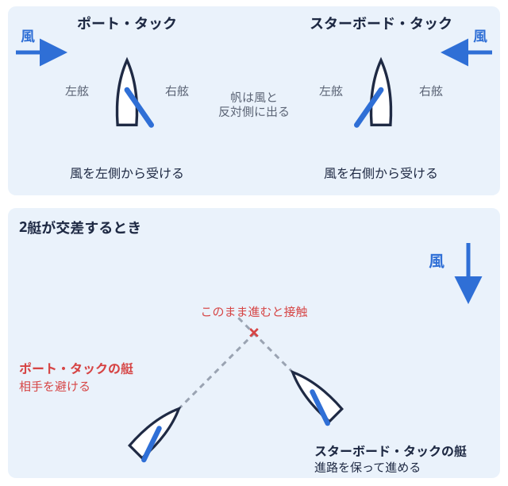
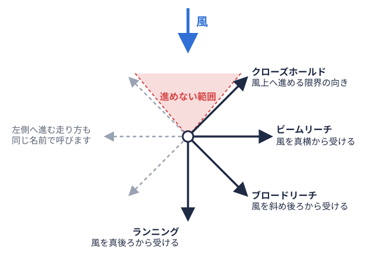

入部準備 2026-11-05
二級小型船舶の学科試験対策｜配点・足切りと出題範囲の整理
入部して先輩から「そろそろ免許を取っておくといいよ」と言われたものの、学科試験が何問で、どこまで勉強すればよいのかが分からない、という新入部員は少なくないはずです。取得ルートや費用、更新のしくみは小型船舶操縦士の取り方ガイドで整理しているので、この記事は学科試験そのものに絞ります。配点と合格基準、公開されている問題例の出題テーマ、ヨット部員が混同しやすい点、直前の確認事項を、公的機関の資料にもとづいてまとめます。
先にお断りすると、「何時間勉強すれば合格できる」といった学習時間の目安は、公的資料からは確認できませんでした。そのため、この記事では時間数ではなく、試験の構造から逆算した準備の考え方を紹介します。
二級の学科試験は「一般科目50問」だけ
小型船舶操縦士の学科試験には、一般科目と上級科目があります。日本海洋レジャー安全・振興協会（JMRA）の試験案内によると、一級は一般科目と上級科目の両方、二級は一般科目だけを受験します。試験時間は、一級が2時間20分、二級が1時間10分です。
一般科目は次の3つで構成されています。
- 小型船舶操縦者の心得及び遵守事項（12問）
- 交通の方法（14問）
- 運航（24問）
つまり二級の学科試験は、合計50問の四択問題です。この問題数と科目構成は、実際に公開されている学科試験の問題例でも確認できます。
配点は「運航」がほぼ半分
同じ案内に示された配点は、心得及び遵守事項が120点、交通の方法が140点、運航が240点で、一般科目の合計は500点です。運航だけで全体の約48%を占めます。ただし、後述する足切りがあるため、配点の大きい科目だけを固めればよいわけではありません。
合格基準は「全体」と「科目ごと」の両方
JMRAの案内では、一般科目は科目ごとに設けられた最低ラインをすべて満たし、そのうえで全体でも一定数以上の正解が必要とされています。数字は次のとおりです。
| 科目 | 問題数 | 配点 | 合格に必要な正解数の目安 |
|---|---|---|---|
| 心得及び遵守事項 | 12問 | 120点 | 6問以上 |
| 交通の方法 | 14問 | 140点 | 7問以上 |
| 運航 | 24問 | 240点 | 12問以上 |
| 一般科目 全体 | 50問 | 500点 | 33問以上 |
どの科目も50%以上の正解が必要で、そのうえで全体でも50問中33問以上が条件です。得意科目で稼いでも、苦手科目が半分を切ると合格できない仕組みなので、「苦手な科目を残さない」ことが準備の基本になります。
なお、編集部が確認したJMRAの案内は2021年7月の日付が入った版です。配点や合格基準は変更される場合があるため、受験前に最新の案内を確認してください。
公開されている問題例から見える出題テーマ
学科試験の問題例は、東京都立大島海洋国際高等学校が公開している資料で読めます。ここでは問題文の転載は避け、どんなテーマが出ているかだけを整理します。編集部が確認した範囲での傾向であり、毎回同じ構成になることを示すものではありません。
心得及び遵守事項（問1〜12）
小型船で航行するときの注意事項、大型船の特徴と死角、海上での見張り、航海計画の立て方、船長の責任、ライフジャケットなどに関する法令、船舶の登録、海に捨てられたごみが航行に与える影響などが取り上げられていました。いずれも「安全に航行するための常識と法令」が中心です。
交通の方法（問13〜26）
海上衝突予防法にもとづく航法（行会い、追越し、横切り）、灯火や形象物の意味、安全な速力などが並び、港則法、海上交通安全法、河川の交通ルールに関する問題も含まれていました。図を見て判断する問題が含まれていました。
運航（問27〜50）
問題数が24問と最も多く、テーマも多岐にわたります。公開されている問題例では、次のようなテーマが出ていました。
- アンカーとアンカーロープの扱い
- 船体の安定と荷物の積み方
- 河口付近の航行、曳航の注意
- コンパスカードの読み方、ノットの意味、海図の記号、灯標や浮標
- 出航前の点検、燃料系統、ガソリンエンジンの仕組みと始動
- 潮汐、荒天時の操船
- 事故が起きたときの処置
エンジンや船体構造の問題は、普段ディンギー帆で走る小型のヨット。大学ヨット部で使う470級やスナイプ級がこれにあたる。に乗っている部員には馴染みが薄いかもしれません。反対に、風や波、潮の流れ、ロープの扱いは、普段の練習で体感している内容と重なる部分があります。
二級（1海里限定）は出題範囲が異なる
公開されている問題例には、二級（1海里限定）として受験する場合の範囲が明記されています。この区分では、心得及び遵守事項は含まれず、交通の方法・運航にあたる問13〜50を55分で解く形です。自分がどの区分を受けるのかで、勉強する範囲も試験時間も変わります。教習所を使う場合も含め、申し込み前に受験区分を確認しておきましょう。免許の内容の違いそのものは、国土交通省やJMRAの案内で確認してください。
ヨットレースのルールとは別の試験です
ヨット部員が混同しやすいのが、レースのルールとの違いです。ヨットレースで艇同士の優先関係を決めているのは、World Sailingが定めるセーリング競技規則世界共通のヨットレースのルールブック。4年ごとに改訂される。（RRS）です。ポート艇が進む向きに対して左側。風を左側から受けて走る状態をポート・タックという。  
一方、学科試験の「交通の方法」で問われるのは、海上衝突予防法や港則法といった、船が海や港を航行するときの法令です。編集部が確認した公開問題例の範囲では、RRSにもとづく問題は見当たりませんでした。レースで身についた感覚が役立つ場面はあっても、試験では法令上の航法を前提に答える必要があります。国土交通省の「海の交通法規入門」でも、海上衝突予防法の行会い船・横切り船・追越し船の航法が基本として解説されているので、試験範囲の確認に使えます。
レースの感覚や普段の練習の経験で答えるのではなく、問題文に書かれた条件にもとづいて法令を当てはめる、という姿勢で臨むのが安全です。
準備の進め方：試験の構造から逆算する
ここからは、上記の配点と合格基準にもとづく編集部の整理です。唯一の正解ではなく、考え方の一例として読んでください。
1. まず公開されている問題例を一度解く
四択50問・1時間10分という形式に慣れるために、最初に問題例を一度解いてみると、自分の得意不得意が分かります。科目ごとに正解数を数えると、足切り（各科目50%）に近い科目が見つかります。
2. 足切りに近い科目から手を入れる
配点が大きい運航を優先したくなりますが、心得及び遵守事項は12問中6問、交通の方法は14問中7問が必要です。点数が低い科目ほど、1科目で不合格になるリスクが高まります。
3. 図や記号は見て覚える
灯火、形象物、海図記号、灯標、コンパスカードなどは、文章よりも図で覚えるほうが整理しやすい分野です。ヨット部で気象や風向を読む習慣がある人は、天気図の読み方の知識が潮汐・荒天の理解に重なる場合があります。
4. 分からない用語は先に潰す
ノット、ブイ、アンカーロープ、クラッチなど、問題文に出てくる用語が分からないと、問題の意味を読み取れません。ヨット用語は用語集で確認できます。ただし、エンジンや法令の用語は別途学ぶ必要があります。
5. 問題集やアプリは解答の誤りに注意する
市販の問題集や無料の学習アプリは便利ですが、アプリのレビューには、答えが違う問題があるという指摘が見られるものもあります。解説に違和感があるときは、法令や運輸局・JMRAの公開資料で照合してください。
受験前に確認しておきたいこと
JMRAの案内と問題例から、試験前に確認できる点を整理します。
- 身体検査が先です。 身体検査に合格しないと、学科試験と実技試験は受けられません。視力、色覚、聴力、疾病や身体機能の障害の有無が検査されます。
- 遅刻に注意。 案内には、試験に遅れると受験できない場合があると書かれています。
- 持ち込み制限。 携帯電話、計算機、方位や潮汐の機能がある時計など、特殊な機能を持つ機器は使用できません。
- 途中退出。 試験開始後は、試験官が指定する時刻まで退出できず、退出した時点で学科試験は終了となります。
- 合否の確認。 身体検査の結果は当日、学科・実技の結果は合格発表日に、受験番号で確認する流れです。
- 有効期間。 身体検査は1年、学科と実技は2年で、再受験の場合は有効期間内の科目を省略できます。全部に合格すると操縦試験合格証明書が発行され、有効期間は1年です。この期間内に免許の申請が必要です。
2026年度の具体的な試験日程は、今回の調査では確認できませんでした。日程や申し込み方法は、JMRAの公式サイトと、お住まいの地域を管轄する運輸局のページで最新の情報を確認してください。
部活の予定とのすり合わせ
試験の日程は部活の予定と重なると、受験できなくなります。大会や合宿の日程は大会カレンダーで確認し、重ならない日を選ぶとよいでしょう。ヨットマニアの水域全国の大学ヨット部を地域ごとに分けた区分。北海道から九州まで全国に9つある。別ページは、関東の加盟大学36校と近畿北陸の10校だけを掲載しています。自分の大学がこれらの水域に含まれていれば、関東水域のページや慶應義塾大学の大学ページのように、水域や大学の情報から大会の流れを確認できます。他の水域の大学ディレクトリは準備中で、成績PDFへのリンクのみ掲載しています。
免許が部活のどの場面で必要になるかは、乗る艇や活動する水域、部の運用方法によって異なる場合があります。取得の時期や費用の補助の有無は、先輩や部の案内で確認してください。取得にかかる費用の目安や更新のしくみは取り方ガイドに、免許をキャリアでどう活かせるかは免許とキャリアの記事にまとめています。
まとめ
二級小型船舶操縦士の学科試験は、心得及び遵守事項12問、交通の方法14問、運航24問の計50問で、試験時間は1時間10分です。各科目で50%以上、全体で33問以上の正解が必要なので、配点の大きい運航に偏らず、苦手科目を残さない準備が基本になります。ヨットレースのルール（RRS）とは別の法令にもとづく試験である点も押さえておきましょう。日程や最新の基準は、JMRAと運輸局の公式情報で確認してください。
出典
PR
この部活・競技を応援したい方へ
体育会学生を支援するプラットフォーム「ツナカレ」で、応援できる部活を探せます。
PR
取材してほしい部活を募集中
あなたの部活・大会を取材してほしい方はこちらからご依頼ください。
オフシーズン・引退後に、長期インターンという選択
部活で培った力を実務で試す。16タイプ診断（30秒）で合う企業がわかります。